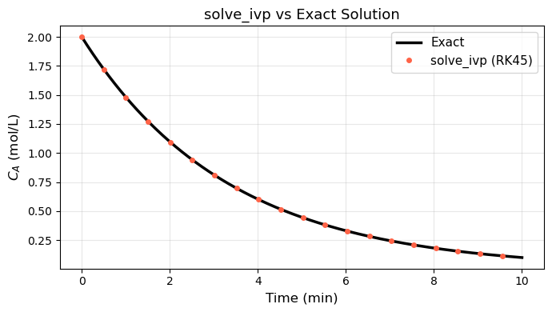
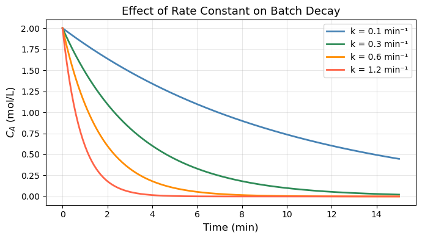

Chapter 18: Ordinary Differential Equations#
Topics Covered:
What an ODE is and how to think about it
Euler’s method: building intuition by stepping forward manually
scipy.integrate.solve_ivp: Python’s general-purpose ODE solverSystems of ODEs: multiple coupled equations
Stiff ODEs and choosing the right solver
Chemical engineering application: batch reactor and CSTR dynamics
Motivation: Why Do We Need ODEs?#
Many real processes evolve over time — not just at steady state. When a quantity changes continuously, the governing equation usually involves a derivative:
This says: the rate of change of concentration equals minus a rate constant times the current concentration. It is a first-order ODE.
Some familiar ChE examples:
Physical situation |
ODE |
|---|---|
First-order batch reaction |
\(\frac{dC_A}{dt} = -k C_A\) |
Newton’s law of cooling |
\(\frac{dT}{dt} = -\frac{UA}{mC_p}(T - T_\infty)\) |
Tank draining (Torricelli) |
\(\frac{dh}{dt} = -\frac{A_o}{A_t}\sqrt{2gh}\) |
CSTR start-up |
\(\frac{dC_A}{dt} = \frac{F}{V}(C_{A0} - C_A) - k C_A\) |
In all these cases we know the rate of change and want to find the trajectory — how the quantity evolves from an initial condition at \(t=0\).
Analytically, the first equation gives \(C_A(t) = C_{A0}\,e^{-kt}\). But most real ODEs have no closed-form solution. We need numerical methods.
import numpy as np
import matplotlib.pyplot as plt
from scipy.integrate import solve_ivp
18.1 What is an ODE?#
An ordinary differential equation (ODE) relates a function to its own derivatives. The general first-order form is:
\(y(t)\) — the unknown function we want to find
\(f(t, y)\) — a known expression for the rate of change
\(y(t_0) = y_0\) — the initial condition that pins down the solution
Why first-order?
Any higher-order ODE can be converted into a system of first-order ODEs. For example:
So learning to solve first-order systems is sufficient for everything.
18.1.1 The Key Idea: Integration#
Solving an ODE is really just integrating a rate:
The complication is that \(f\) depends on \(y\) itself — so we cannot evaluate the integral without already knowing the answer. Numerical methods break this circularity by marching forward in small time steps.
18.1.2 Verifying an Analytical Solution#
Before diving into numerics, let us confirm the exponential decay solution analytically:
Proof: differentiate the proposed solution and check it satisfies the ODE.
k = 0.3 # 1/min — first-order rate constant
C_A0 = 2.0 # mol/L — initial concentration
t = np.linspace(0, 10, 300)
C_A_exact = C_A0 * np.exp(-k * t)
fig, ax = plt.subplots(figsize=(7, 4))
ax.plot(t, C_A_exact, 'steelblue', linewidth=2.5, label=r'$C_A(t) = C_{A0}\,e^{-kt}$')
ax.axhline(C_A0, color='gray', linestyle='--', linewidth=1, label=f'$C_{{A0}}$ = {C_A0} mol/L')
ax.set_xlabel('Time (min)', fontsize=12)
ax.set_ylabel('Concentration (mol/L)', fontsize=12)
ax.set_title('First-Order Batch Reaction: Analytical Solution', fontsize=13)
ax.legend(fontsize=11)
ax.grid(True, alpha=0.3)
plt.tight_layout()
plt.show()
print(f"At t = 5 min: C_A = {C_A0 * np.exp(-k*5):.4f} mol/L")

At t = 5 min: C_A = 0.4463 mol/L
18.2 Euler’s Method#
Before using SciPy’s black-box solver, let’s implement the simplest numerical method by hand. This builds intuition for what every ODE solver is doing under the hood.
18.2.1 The Core Idea#
Given \(\frac{dy}{dt} = f(t, y)\) and a current value \(y_n\) at time \(t_n\), we approximate the next value using the tangent line:
where \(h = \Delta t\) is the step size. We are pretending the rate stays constant over each small interval \([t_n,\, t_{n+1}]\).
Geometric picture: At each point, we know the slope \(f(t_n, y_n)\). We follow that slope for a tiny distance \(h\), land at a new point, read the new slope, and repeat.
18.2.2 Error and Step Size#
Euler’s method has first-order accuracy: halving \(h\) halves the global error.
Local truncation error per step: \(O(h^2)\) — from the Taylor expansion
\(y(t+h) = y(t) + h\,y'(t) + \frac{h^2}{2}y''(t) + \cdots\)
We keep only the first two terms.Global error after \(N = T/h\) steps: \(O(h)\) — errors accumulate.
This means Euler is not very efficient: to get 10× more accuracy you need 10× smaller steps (10× more work). Runge-Kutta and adaptive methods do much better.
# ── Euler's method for dC_A/dt = -k*C_A ─────────────────────────────────────
def dCA_dt(t, C_A):
return -k * C_A # f(t, y) — the ODE right-hand side
def euler(f, y0, t_span, h):
"""Simple Euler integrator. Returns (t_array, y_array)."""
t0, tf = t_span
t_arr = [t0]
y_arr = [y0]
t_cur, y_cur = t0, y0
while t_cur < tf - 1e-10:
h_step = min(h, tf - t_cur) # don't overshoot the end
y_cur = y_cur + h_step * f(t_cur, y_cur)
t_cur = t_cur + h_step
t_arr.append(t_cur)
y_arr.append(y_cur)
return np.array(t_arr), np.array(y_arr)
# Compare three step sizes
t_exact = np.linspace(0, 10, 400)
C_exact = C_A0 * np.exp(-k * t_exact)
fig, axes = plt.subplots(1, 2, figsize=(12, 4))
ax = axes[0]
ax.plot(t_exact, C_exact, 'k-', linewidth=2, label='Exact')
colors = ['tomato', 'darkorange', 'seagreen']
for h_val, color in zip([2.0, 1.0, 0.5], colors):
t_eu, y_eu = euler(dCA_dt, C_A0, (0, 10), h_val)
ax.plot(t_eu, y_eu, 'o--', color=color, markersize=4,
label=f'Euler h={h_val}')
ax.set_xlabel('Time (min)')
ax.set_ylabel('$C_A$ (mol/L)')
ax.set_title("Euler's Method: Effect of Step Size")
ax.legend(fontsize=9)
ax.grid(True, alpha=0.3)
# Error vs step size
ax2 = axes[1]
h_vals = [2.0, 1.0, 0.5, 0.25, 0.1, 0.05, 0.01]
errors = []
for h_val in h_vals:
_, y_eu = euler(dCA_dt, C_A0, (0, 10), h_val)
C_ref = C_A0 * np.exp(-k * 10)
errors.append(abs(y_eu[-1] - C_ref))
ax2.loglog(h_vals, errors, 'o-', color='steelblue', markersize=6, label='Euler error')
# Reference slope-1 line
h_ref = np.array([0.01, 2.0])
ax2.loglog(h_ref, 0.5 * h_ref, 'k--', label='slope = 1 (1st order)')
ax2.set_xlabel('Step size $h$')
ax2.set_ylabel('Global error at $t=10$')
ax2.set_title('Euler Convergence: $O(h)$')
ax2.legend(fontsize=10)
ax2.grid(True, which='both', alpha=0.3)
plt.tight_layout()
plt.show()

18.3 solve_ivp: SciPy’s ODE Solver#
In practice, we never use Euler’s method — it is too inaccurate. SciPy’s solve_ivp uses Runge-Kutta methods that achieve much higher accuracy with fewer function evaluations, and can adapt the step size automatically.
18.3.1 Calling Convention#
from scipy.integrate import solve_ivp
sol = solve_ivp(fun, t_span, y0, method='RK45', t_eval=t_points)
Argument |
Meaning |
|---|---|
|
Function |
|
Tuple |
|
List or array of initial conditions — one value per ODE variable |
|
Solver algorithm (default |
|
Optional array of times where solution is saved |
The result sol has:
sol.t— time pointssol.y— solution array, shape(n_vars, n_time_points)— each row is one variablesol.success—Trueif the solver converged
18.3.2 Under the Hood: Runge-Kutta 4/5#
The default 'RK45' method takes 4 slope evaluations per step and combines them with optimal weights (much better than Euler’s single evaluation). The “45” means it uses a 4th-order estimate and a 5th-order estimate — the difference between them is used as an error estimate, allowing the step size to be adjusted automatically.
Global error is \(O(h^4)\) — reducing \(h\) by half reduces error by 16× (vs 2× for Euler).
# ── solve_ivp: first-order batch reaction ────────────────────────────────────
def dCA_dt_ivp(t, y):
C_A = y[0]
return [-k * C_A] # must return a list/array, not a scalar
t_eval = np.linspace(0, 10, 200)
sol = solve_ivp(dCA_dt_ivp,
t_span=(0, 10),
y0=[C_A0], # initial condition as a list
method='RK45',
t_eval=t_eval,
rtol=1e-6, atol=1e-9)
print("Solver succeeded:", sol.success)
print(f"Number of RHS evaluations: {sol.nfev}")
print(f"C_A at t=10: numerical = {sol.y[0,-1]:.6f}, exact = {C_A0*np.exp(-k*10):.6f}")
fig, ax = plt.subplots(figsize=(7, 4))
ax.plot(t_exact, C_exact, 'k-', linewidth=2.5, label='Exact')
ax.plot(sol.t, sol.y[0], 'o', color='tomato', markersize=4,
markevery=10, label='solve_ivp (RK45)')
ax.set_xlabel('Time (min)', fontsize=12)
ax.set_ylabel('$C_A$ (mol/L)', fontsize=12)
ax.set_title('solve_ivp vs Exact Solution', fontsize=13)
ax.legend(fontsize=11)
ax.grid(True, alpha=0.3)
plt.tight_layout()
plt.show()
Solver succeeded: True
Number of RHS evaluations: 92
C_A at t=10: numerical = 0.099574, exact = 0.099574

18.3.3 Passing Parameters with args#
Often the ODE contains physical parameters (rate constants, temperatures, etc.). Pass them cleanly with the args keyword:
def dCA_dt(t, y, k):
return [-k * y[0]]
sol = solve_ivp(dCA_dt, (0, 10), [C_A0], args=(0.3,))
This avoids global variables and makes your functions reusable.
# ── Comparing different rate constants with args ─────────────────────────────
def dCA_dt_param(t, y, k_val):
return [-k_val * y[0]]
t_eval = np.linspace(0, 15, 300)
fig, ax = plt.subplots(figsize=(7, 4))
for k_val, color in zip([0.1, 0.3, 0.6, 1.2], ['steelblue', 'seagreen', 'darkorange', 'tomato']):
sol = solve_ivp(dCA_dt_param, (0, 15), [C_A0],
args=(k_val,), t_eval=t_eval)
ax.plot(sol.t, sol.y[0], color=color, linewidth=2,
label=f'k = {k_val} min⁻¹')
ax.set_xlabel('Time (min)', fontsize=12)
ax.set_ylabel('$C_A$ (mol/L)', fontsize=12)
ax.set_title('Effect of Rate Constant on Batch Decay', fontsize=13)
ax.legend(fontsize=10)
ax.grid(True, alpha=0.3)
plt.tight_layout()
plt.show()

18.4 Systems of ODEs#
Most real problems involve multiple coupled variables — temperatures, concentrations, and flow rates that all affect each other simultaneously. solve_ivp handles this naturally: y is a vector and f returns a vector of the same length.
18.4.1 Consecutive Reactions: A → B → C#
A classic ChE scenario: reactant A converts to intermediate B, which then converts to product C.
Material balances (liquid phase, constant volume):
Three equations, three unknowns. y = [C_A, C_B, C_C].
Note that \(C_A + C_B + C_C = \text{const}\) (total moles conserved) — a good check for correctness.
# ── Consecutive reactions A → B → C ──────────────────────────────────────────
k1 = 0.4 # 1/min (A → B)
k2 = 0.1 # 1/min (B → C)
def consecutive_rxn(t, y, k1, k2):
C_A, C_B, C_C = y
dCA = -k1 * C_A
dCB = k1 * C_A - k2 * C_B
dCC = k2 * C_B
return [dCA, dCB, dCC]
t_eval = np.linspace(0, 20, 400)
sol = solve_ivp(consecutive_rxn,
t_span=(0, 20),
y0=[1.0, 0.0, 0.0], # [C_A0, C_B0, C_C0] in mol/L
args=(k1, k2),
t_eval=t_eval)
# Check mass conservation
total = sol.y[0] + sol.y[1] + sol.y[2]
print(f"Mass balance check — max deviation from 1.0: {np.max(np.abs(total - 1.0)):.2e}")
# Find time of maximum C_B
idx_max = np.argmax(sol.y[1])
t_max_B = sol.t[idx_max]
print(f"Maximum C_B = {sol.y[1, idx_max]:.4f} mol/L at t = {t_max_B:.2f} min")
fig, ax = plt.subplots(figsize=(8, 4))
ax.plot(sol.t, sol.y[0], 'steelblue', linewidth=2.5, label='$C_A$ (reactant)')
ax.plot(sol.t, sol.y[1], 'darkorange', linewidth=2.5, label='$C_B$ (intermediate)')
ax.plot(sol.t, sol.y[2], 'seagreen', linewidth=2.5, label='$C_C$ (product)')
ax.axvline(t_max_B, color='gray', linestyle='--', linewidth=1,
label=f'$C_B$ max at t={t_max_B:.1f} min')
ax.set_xlabel('Time (min)', fontsize=12)
ax.set_ylabel('Concentration (mol/L)', fontsize=12)
ax.set_title(r'Consecutive Reactions: A $\rightarrow$ B $\rightarrow$ C', fontsize=13)
ax.legend(fontsize=10)
ax.grid(True, alpha=0.3)
plt.tight_layout()
plt.show()
Mass balance check — max deviation from 1.0: 4.44e-16
Maximum C_B = 0.6299 mol/L at t = 4.61 min

18.4.2 Second-Order ODE: Damped Oscillator (Tank Level)#
A liquid tank with a spring-loaded valve exhibits second-order dynamics common in process control:
where \(\tau\) is the time constant and \(\zeta\) is the damping ratio:
\(\zeta\) |
Behavior |
|---|---|
\(\zeta > 1\) |
Overdamped — slow return, no oscillation |
\(\zeta = 1\) |
Critically damped — fastest non-oscillatory return |
\(\zeta < 1\) |
Underdamped — oscillates before settling |
Rewrite as a system by letting \(y_1 = h\) and \(y_2 = \frac{dh}{dt}\):
# ── Second-order ODE: damped oscillator ──────────────────────────────────────
def damped_oscillator(t, y, tau, zeta, h_ss):
h, dhdt = y
d2hdt2 = (h_ss - h - 2*zeta*tau*dhdt) / tau**2
return [dhdt, d2hdt2]
tau = 2.0 # time constant (min)
h_ss = 1.0 # steady-state level (m) — step change from h=0
t_eval = np.linspace(0, 20, 400)
y0 = [0.0, 0.0] # starts at rest at h=0
fig, ax = plt.subplots(figsize=(8, 4))
for zeta, color, label in [
(0.3, 'tomato', 'Underdamped (ζ=0.3)'),
(1.0, 'steelblue', 'Critically damped (ζ=1.0)'),
(2.0, 'seagreen', 'Overdamped (ζ=2.0)'),
]:
sol = solve_ivp(damped_oscillator, (0, 20), y0,
args=(tau, zeta, h_ss), t_eval=t_eval)
ax.plot(sol.t, sol.y[0], color=color, linewidth=2.5, label=label)
ax.axhline(h_ss, color='gray', linestyle='--', linewidth=1, label='Steady state')
ax.set_xlabel('Time (min)', fontsize=12)
ax.set_ylabel('Tank level h (m)', fontsize=12)
ax.set_title('Second-Order Step Response: Tank Level Dynamics', fontsize=13)
ax.legend(fontsize=10)
ax.grid(True, alpha=0.3)
plt.tight_layout()
plt.show()

18.5 Stiff ODEs#
18.5.1 What is Stiffness?#
A system is stiff when it contains processes operating on vastly different time scales simultaneously. For example, in chemical kinetics:
The first equation has a “fast” term (\(k_1 = 10^6\)) and a “slow” term. To remain stable, an explicit method like RK45 must take tiny steps sized to the fastest time scale — even when the solution is actually changing slowly. This makes RK45 extremely slow (millions of steps) on stiff problems.
Rule of thumb: if RK45 takes a very long time or requires very small steps with no apparent reason, try method='Radau' or method='BDF'.
18.5.2 Stiff Solvers#
Method |
Type |
Best for |
|---|---|---|
|
Explicit, adaptive |
Smooth, non-stiff problems |
|
Explicit, lower order |
Quick/rough solutions |
|
Implicit Runge-Kutta |
Stiff problems |
|
Implicit multi-step |
Stiff problems, large systems |
|
Auto-switching |
When stiffness is uncertain |
Implicit methods solve a system of equations at each step — more work per step, but can take huge steps, so they win on stiff problems.
18.5.3 Example: Fast and Slow Reaction Network#
Consider a reaction network where species \(X\) is produced and consumed very rapidly (a “short-lived intermediate”):
# ── Stiff system: compare RK45 vs Radau ──────────────────────────────────────
import time
k1_s, k2_s, k3_s = 1000.0, 1000.0, 0.01
def stiff_rxn(t, y):
C_A, C_X, C_B = y
dCA = -k1_s * C_A - k3_s * C_A
dCX = k1_s * C_A - k2_s * C_X
dCB = k2_s * C_X + k3_s * C_A
return [dCA, dCX, dCB]
y0_stiff = [1.0, 0.0, 0.0]
t_span = (0, 1.0)
t_eval = np.linspace(0, 1.0, 500)
# RK45
t0 = time.time()
sol_rk45 = solve_ivp(stiff_rxn, t_span, y0_stiff,
method='RK45', t_eval=t_eval, rtol=1e-4, atol=1e-7)
t_rk45 = time.time() - t0
# Radau
t0 = time.time()
sol_radau = solve_ivp(stiff_rxn, t_span, y0_stiff,
method='Radau', t_eval=t_eval, rtol=1e-4, atol=1e-7)
t_radau = time.time() - t0
print(f"RK45 : {sol_rk45.nfev:5d} function evaluations, {t_rk45*1000:.1f} ms")
print(f"Radau: {sol_radau.nfev:5d} function evaluations, {t_radau*1000:.1f} ms")
fig, axes = plt.subplots(1, 2, figsize=(12, 4))
for ax, sol, title in zip(axes, [sol_rk45, sol_radau], ['RK45', 'Radau']):
ax.plot(sol.t, sol.y[0], 'steelblue', linewidth=2, label='$C_A$')
ax.plot(sol.t, sol.y[1], 'darkorange', linewidth=2, label='$C_X$ (fast intermediate)')
ax.plot(sol.t, sol.y[2], 'seagreen', linewidth=2, label='$C_B$')
ax.set_xlabel('Time (s)', fontsize=11)
ax.set_ylabel('Concentration (mol/L)', fontsize=11)
ax.set_title(f'{title} ({sol.nfev} evals)', fontsize=12)
ax.legend(fontsize=9)
ax.grid(True, alpha=0.3)
plt.tight_layout()
plt.show()
RK45 : 2246 function evaluations, 13.9 ms
Radau: 345 function evaluations, 5.6 ms

18.6 ChE Application: Non-Isothermal Batch Reactor#
The most important ODE application in ChE is the non-isothermal reactor — where both concentration and temperature evolve together. The temperature affects the rate (Arrhenius), and the reaction releases heat which changes the temperature. These two effects are coupled.
18.6.1 Model Equations#
Consider an exothermic first-order liquid-phase reaction \(A \to B\) in an adiabatic batch reactor:
Mole balance: $\( \frac{dC_A}{dt} = -k(T)\, C_A \)$
Energy balance (adiabatic, liquid phase): $\( \rho C_p \frac{dT}{dt} = (-\Delta H_{rxn})\, k(T)\, C_A \)$
Arrhenius rate: $\( k(T) = A\, e^{-E_a / RT} \)$
The two equations are coupled: temperature changes \(k\), which changes the rate of \(C_A\) consumption, which changes the heat released.
18.6.2 Physical Parameters#
We use parameters typical of an industrial hydrogenation:
Parameter |
Value |
Units |
|---|---|---|
Pre-exponential \(A\) |
\(1.0 \times 10^{10}\) |
min⁻¹ |
Activation energy \(E_a\) |
\(75{,}000\) |
J/mol |
\(-\Delta H_{rxn}\) |
\(50{,}000\) |
J/mol |
\(\rho C_p\) |
\(4{,}000\) |
J/(L·K) |
\(C_{A0}\) |
\(2.0\) |
mol/L |
\(T_0\) |
\(300\) |
K |
# ── Non-isothermal adiabatic batch reactor ───────────────────────────────────
R_gas = 8.314 # J/(mol·K)
A_arr = 1.0e10 # pre-exponential (1/min)
Ea = 75_000.0 # activation energy (J/mol)
dH_rxn = -50_000.0 # heat of reaction (J/mol) — exothermic → negative
rho_Cp = 4_000.0 # volumetric heat capacity (J/(L·K))
C_A0_batch = 2.0 # mol/L
T0_batch = 300.0 # K
def batch_reactor(t, y):
C_A, T = y
k_T = A_arr * np.exp(-Ea / (R_gas * T))
dCA_dt = -k_T * C_A
dT_dt = (-dH_rxn) * k_T * C_A / rho_Cp
return [dCA_dt, dT_dt]
t_eval = np.linspace(0, 30, 600)
sol_batch = solve_ivp(batch_reactor,
t_span=(0, 30),
y0=[C_A0_batch, T0_batch],
method='Radau', # can be stiff near ignition
t_eval=t_eval,
rtol=1e-7, atol=1e-9)
C_A_sol = sol_batch.y[0]
T_sol = sol_batch.y[1]
# Conversion
X_A = (C_A0_batch - C_A_sol) / C_A0_batch
print(f"Final conversion X_A = {X_A[-1]:.4f}")
print(f"Final temperature T = {T_sol[-1]:.2f} K (ΔT = {T_sol[-1]-T0_batch:.2f} K)")
print(f"Adiabatic temp rise (check): {-dH_rxn * C_A0_batch / rho_Cp:.2f} K")
fig, axes = plt.subplots(1, 3, figsize=(14, 4))
# Concentration
axes[0].plot(sol_batch.t, C_A_sol, 'steelblue', linewidth=2.5)
axes[0].set_xlabel('Time (min)', fontsize=12)
axes[0].set_ylabel('$C_A$ (mol/L)', fontsize=12)
axes[0].set_title('Reactant Concentration', fontsize=12)
axes[0].grid(True, alpha=0.3)
# Temperature
axes[1].plot(sol_batch.t, T_sol, 'tomato', linewidth=2.5)
axes[1].axhline(T0_batch, color='gray', linestyle='--', linewidth=1, label='$T_0$')
axes[1].set_xlabel('Time (min)', fontsize=12)
axes[1].set_ylabel('Temperature (K)', fontsize=12)
axes[1].set_title('Reactor Temperature', fontsize=12)
axes[1].legend(fontsize=10)
axes[1].grid(True, alpha=0.3)
# Phase plot: C_A vs T
axes[2].plot(T_sol, C_A_sol, 'seagreen', linewidth=2.5)
axes[2].plot(T0_batch, C_A0_batch, 'ko', markersize=8, label='Start')
axes[2].plot(T_sol[-1], C_A_sol[-1], 'r*', markersize=12, label='End')
axes[2].set_xlabel('Temperature (K)', fontsize=12)
axes[2].set_ylabel('$C_A$ (mol/L)', fontsize=12)
axes[2].set_title('Phase Portrait', fontsize=12)
axes[2].legend(fontsize=10)
axes[2].grid(True, alpha=0.3)
plt.suptitle('Adiabatic Batch Reactor: Coupled Mole & Energy Balances', fontsize=13, y=1.02)
plt.tight_layout()
plt.show()
Final conversion X_A = 0.0267
Final temperature T = 300.67 K (ΔT = 0.67 K)
Adiabatic temp rise (check): 25.00 K

18.6.3 CSTR Start-Up Dynamics#
A continuous stirred tank reactor (CSTR) at start-up must transition from empty (initial conditions) to steady state. The governing equations are:
Mole balance (liquid phase, constant volume \(V\), volumetric flow rate \(Q\)): $\( \frac{dC_A}{dt} = \frac{Q}{V}(C_{A,\text{in}} - C_A) - k(T)\, C_A \)$
Energy balance (with jacket cooling at temperature \(T_c\)): $\( \rho C_p \frac{dT}{dt} = \frac{Q\,\rho C_p}{V}(T_\text{in} - T) + (-\Delta H_{rxn})\,k(T)\,C_A - \frac{UA}{V}(T - T_c) \)$
We want to find:
How long does it take to reach steady state?
Does the reactor settle smoothly or oscillate?
# ── CSTR start-up dynamics ───────────────────────────────────────────────────
# Reactor parameters
Q = 10.0 # L/min — volumetric flow rate
V = 100.0 # L — reactor volume → τ = V/Q = 10 min
CA_in = 2.0 # mol/L — feed concentration
T_in = 300.0 # K — feed temperature
T_c = 290.0 # K — cooling jacket temperature
UA = 2000.0 # J/(min·K)
rho_Cp_cstr = 4000.0 # J/(L·K)
# Kinetics (same Arrhenius as batch)
A_cstr = 1.0e10
Ea_cstr = 75_000.0
dH_cstr = -50_000.0
def cstr_startup(t, y):
C_A, T = y
k_T = A_cstr * np.exp(-Ea_cstr / (R_gas * T))
tau_ = V / Q
dCA_dt = (CA_in - C_A) / tau_ - k_T * C_A
dT_dt = ((T_in - T) / tau_
+ (-dH_cstr) * k_T * C_A / rho_Cp_cstr
- UA * (T - T_c) / (V * rho_Cp_cstr))
return [dCA_dt, dT_dt]
t_eval_cstr = np.linspace(0, 120, 1200)
# Start cold and empty (feed conditions as IC)
sol_cstr = solve_ivp(cstr_startup,
t_span=(0, 120),
y0=[CA_in, T_in], # start with feed filling reactor
method='Radau',
t_eval=t_eval_cstr,
rtol=1e-8, atol=1e-10)
# Approximate steady state (last 5 points average)
CA_ss = np.mean(sol_cstr.y[0, -5:])
T_ss = np.mean(sol_cstr.y[1, -5:])
X_ss = (CA_in - CA_ss) / CA_in
print(f"Steady-state C_A ≈ {CA_ss:.4f} mol/L")
print(f"Steady-state T ≈ {T_ss:.2f} K")
print(f"Steady-state conversion X_A ≈ {X_ss:.4f}")
fig, axes = plt.subplots(1, 2, figsize=(12, 4))
axes[0].plot(sol_cstr.t, sol_cstr.y[0], 'steelblue', linewidth=2.5)
axes[0].axhline(CA_ss, color='gray', linestyle='--', linewidth=1, label=f'SS: {CA_ss:.3f} mol/L')
axes[0].set_xlabel('Time (min)', fontsize=12)
axes[0].set_ylabel('$C_A$ (mol/L)', fontsize=12)
axes[0].set_title('CSTR Start-Up: Concentration', fontsize=12)
axes[0].legend(fontsize=10)
axes[0].grid(True, alpha=0.3)
axes[1].plot(sol_cstr.t, sol_cstr.y[1], 'tomato', linewidth=2.5)
axes[1].axhline(T_ss, color='gray', linestyle='--', linewidth=1, label=f'SS: {T_ss:.1f} K')
axes[1].set_xlabel('Time (min)', fontsize=12)
axes[1].set_ylabel('Temperature (K)', fontsize=12)
axes[1].set_title('CSTR Start-Up: Temperature', fontsize=12)
axes[1].legend(fontsize=10)
axes[1].grid(True, alpha=0.3)
plt.suptitle('Non-Isothermal CSTR Start-Up Dynamics', fontsize=13, y=1.02)
plt.tight_layout()
plt.show()
Steady-state C_A ≈ 1.9832 mol/L
Steady-state T ≈ 299.72 K
Steady-state conversion X_A ≈ 0.0084

Chapter 18 Summary#
Concept |
Code |
Notes |
|---|---|---|
Define ODE |
|
|
Solve ODE |
|
Default method: |
Save output times |
|
Otherwise solver picks its own points |
Pass parameters |
|
Add params to |
Access solution |
|
Row |
Stiff problem |
|
When RK45 is very slow or takes tiny steps |
Euler’s method |
|
For understanding only — don’t use in practice |
System of ODEs |
|
One IC per equation |
Workflow for any ODE problem:
Identify state variables \(\to\) one entry in
yper variableWrite each \(\frac{dy_i}{dt}\) as a function of
tandyCollect into
def rhs(t, y): return [dy1, dy2, ...]Call
solve_ivp(rhs, (t0, tf), y0, t_eval=...)Check
sol.successand verify physics (mass balance, energy balance)If slow or failing, try
method='Radau'
Key insight: every ODE solver is doing essentially the same thing as Euler’s method — just with smarter, higher-order estimates of the slope at each step. The core idea is always: march forward from the initial condition using the known rate of change.